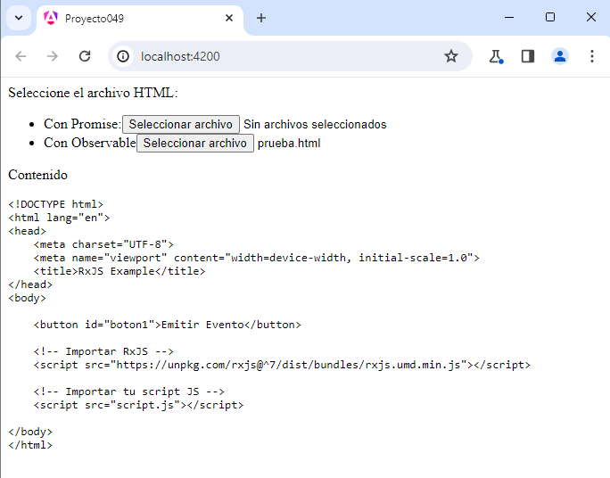

En Angular, tanto las promesas (Promise) como los observables (Observable) se utilizan para manejar operaciones asíncronas, pero tienen diferencias clave en su implementación y funcionalidad.
La mayor parte de las librerías propuestas en angular utilizan por defecto los observables, se utilizan en servicios como HTTP, formularios reactivos, eventos del DOM, etc.
En resumen, mientras que las promesas son más simples y adecuadas para casos de uso más básicos, los observables proporcionan una funcionalidad más avanzada y son la elección preferida en el ecosistema Angular, especialmente en situaciones más complejas y en el desarrollo de aplicaciones más reactivas.
Vamos a desarrollar una aplicación que resuelva el mismo problema utilizando la clase Promise y la clase Observable.
Desarrollar una aplicación que permita al usuario seleccionar un archivo con formato HTML de su equipo y posteriormente muestre su contenido en la página. Resolver la actividad de la lectura en una Promise y luego con un Observable, utilizando la clase FileReader para la lectura del archivo. Debe realizar la lectura del archivo con formato HTML y si dicho archivo no tiene extensión HTML debe rechazar su lectura.
Crearemos primero el proyecto
ng new proyecto049
Crear ahora el servicio donde vamos a hacer la lectura del archivo en forma asíncrona, empleando tanto promesas como observables:
ng generate service archivo
El código a implementar en el servicio es:
import { Injectable } from '@angular/core';
import { Observable, Observer } from 'rxjs';
@Injectable({
providedIn: 'root'
})
export class ArchivoService {
constructor() { }
recuperarConPromesa(file: File) {
return new Promise<string>((resolve, reject) => {
if (!file.name.endsWith(".html")) {
reject("Extensión de archivo incorrecta")
} else {
const fileReader1 = new FileReader()
fileReader1.readAsText(file)
fileReader1.addEventListener("load", () => {
resolve(fileReader1.result!.toString())
})
}
})
}
recuperarConObservable(file: File): Observable<string> {
return new Observable((observer: Observer<string>) => {
if (!file.name.endsWith(".html")) {
observer.error("Extensión de archivo incorrecta");
} else {
const fileReader = new FileReader();
fileReader.readAsText(file);
fileReader.addEventListener("load", () => {
observer.next(fileReader.result!.toString());
observer.complete();
});
}
});
}
}
El método 'recuperarConPromesa' recibe un objeto File como parámetro, que se obtiene al seleccionar un archivo a través de un formulario en HTML.
Verifica si la extensión del archivo es ".html". Si no lo es, rechaza la promesa con un mensaje de error.
Si la extensión del archivo es correcta, crea un objeto FileReader y utiliza su método readAsText para leer el contenido del archivo como texto.
Se añade un evento "load" al FileReader, que se dispara cuando la operación de lectura es exitosa. En ese caso, se resuelve la promesa con el resultado.
El método 'recuperarConObservable' también toma un objeto File como parámetro. Al igual que en el método de promesa, verifica si la extensión del archivo es ".html". Si no lo es, emite un error a través del objeto Observer.
Si la extensión del archivo es correcta, crea un objeto FileReader y utiliza su método readAsText para leer el contenido del archivo como texto. Se añade un evento "load" al FileReader, que se dispara cuando la operación de lectura es exitosa. En ese caso, emite el resultado (el contenido del archivo convertido a cadena) a través de observer.next().
Finalmente, completa el observable con observer.complete(), indicando que la secuencia ha terminado.
Modificamos la componente creada por defecto por Angular.
app.component.ts
import { Component } from '@angular/core';
import { RouterOutlet } from '@angular/router';
import { FormsModule } from '@angular/forms';
import { ArchivoService } from './archivo.service';
@Component({
selector: 'app-root',
imports: [RouterOutlet, FormsModule],
templateUrl: './app.component.html',
styleUrls: ['./app.component.css']
})
export class AppComponent {
nombreArchivo = '';
resultado: any;
constructor(private archi: ArchivoService) { }
async recuperarConPromise(event: any) {
try {
this.resultado = await this.archi.recuperarConPromesa(event.target.files[0]);
} catch (error) {
this.resultado = error
}
}
recuperarConObservable(event: any) {
this.archi.recuperarConObservable(event.target.files[0]).subscribe({
next: (resultado) => {
this.resultado = resultado;
},
error: (error) => {
this.resultado = error;
}
});
}
}
nombreArchivo: Variable que almacena el nombre del archivo seleccionado.
resultado: Variable que almacena el resultado de la operación de recuperación de archivos.
El constructor recibe una instancia de ArchivoService a través de la inyección de dependencias.
El método recuperarConPromise: Método asincrónico que utiliza await para esperar a que la promesa retornada por recuperarConPromesa se resuelva. Actualiza this.resultado con el resultado de la operación o un mensaje de error si la promesa es rechazada.
El método recuperarConObservable: utiliza la función subscribe para suscribirse a un observable retornado por recuperarConObservable. El objeto pasado a subscribe define dos funciones de devolución de llamada: next para manejar el próximo valor emitido por el observable y error para manejar el error.
La plantilla HTML de la componente también la modificamos.
app.component.html
<div>
<label for="archivohtml">Seleccione el archivo HTML:</label>
<ul>
<li>
Con Promise:<input type="file" [(ngModel)]="nombreArchivo" (change)="recuperarConPromise($event)">
</li>
<li>
Con Observable<input type="file" [(ngModel)]="nombreArchivo" (change)="recuperarConObservable($event)">
</li>
</ul>
</div>
<p>Contenido</p>
<pre>{{resultado}}</pre>
<router-outlet />
La salida por pantalla luego de seleccionar un archivo HTML debe ser similar a:
Podemos probar esta aplicación en la web aquí.